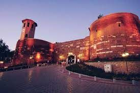
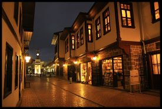
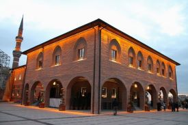
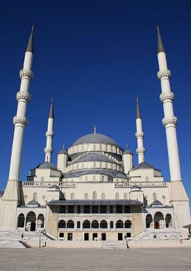
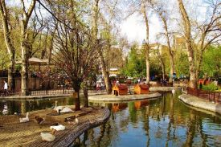
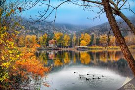
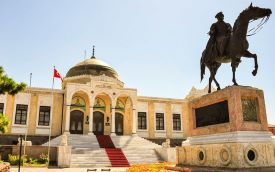
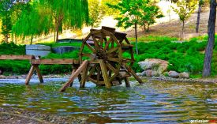

GEZİLECEK YERLER

ANITKABİR
Anıtkabir, Türkiye'nin başkenti Ankara'nın Çankaya ilçesinde yer alan Mustafa Kemal Atatürk'ün anıt mezarını içeren komplekstir. Emin Onat ile Orhan Arda'nın tasarımı olan yapı kompleksinin 1944'te başlanan inşası 1953'te tamamlanmıştır.

ANKARA KALESİ
Tepenin yüksek bölümünü kaplayan iç kale ve çevresini kuşatan dış kaleden oluşur. Dış kalenin 20'ye yakın kulesi vardır. Dış kale eski Ankara şehrini çevirir. İç kale yaklaşık 43.000 m²'lik bir yer kaplar. 14 - 16 m yüksekliğindeki duvarların üstünde çoğu 5 köşeli 42 kule vardır.

HAMAMÖNÜ
Hamamönü, Ankara ilinin Altındağ ilçesinde bulunan tarihi bir semttir. Semtte bulunan 19. yüzyıl sivil mimarlık örneği tarihi binalar restore edilerek bölge yeniden canlandırılmıştır. Hamamönü, adını bir Türk boyu olan Oğuzların Bayındır boyu beylerinden Karacabey'in yaptırdığı çifte hamamdan almıştır.
ESKİ MECLİS
23 Nisan 1920'de Meclis etrafında binlerce kişi büyük bir kalabalık halinde Meclis' in açılışını beklemişlerdir. Gerekli törenlerden sonra Meclis 115 temsilci ile ilk toplantısını yapmıştır. Meclisin ilk açılış konuşmasını ise Meclis Başkalığı'na seçilen en yaşlı üye Sinop Mebusu Şerif Bey gerçekleştirmiştir.

HACI BAYRAM VELİ CAMİİ
Hacı Bayram Câmii, Ankara'nın Altındağ ilçesinin Ulus semtinde bulunan tarihi cami. Augustus (Ogüst) Tapınağı'nın bitişiğindedir. İlk zaviye olarak yapılış tarihi hicri 831 yılı (1427-1428) olan caminin ilk mimarı Mimar Mehmet Bey hakkında bilgi bulunmamaktadır.

KOCATEPE CAMİİ
Kocatepe Camii Ankara'nın Kocatepe semtine inşa edilmiş bir camidir. Caminin inşasına 1967 yılında başlanmıştır. Yaklaşık olarak inşası 20 sene sürmüştür ve Türkiye Diyanet İşleri Başkanlığı caminin tüm mal varlığını satın almıştır. Caminin tam olarak inşası ise 1987 yılında tamamlanmıştır.

KUĞULU PARK
Kuğulu Park, Ankara şehrinin Kavaklıdere mahallesinde bulunan bir parktır. Park, Tunalı Hilmi Caddesi, Atatürk Bulvarı ve Polonya Caddesi'nin arasındadır. Parkın havuzunda, kuğular, kazlar ve ördekler yer alır. Kuğulu parkın bulunduğu arazı, park olmadan önce içinden dere geçen kavaklık bir araziydi.

EYMİR GÖLÜ
Eymir gölünün yüzey alanı 108.8 Hektar (1.09 km²), ortalama derinliği 3.80 m., su yüzey kotu 969 m, göl çevresi uzunluğu 9 km, uzunluğu 4.2 km, genişliği ortalama 0.25 km'dir. Kurak zamanda en derin yeri 5.5 metre olup, suyun en yüksek olduğu dönemde ortalama derinliği 5 metre civarına çıkmaktadır.
SEĞMENLER PARKI
Seğmenler Parkı, Ankara'da 1983'te açılan bir park. 67 bin metre karelik bir alanı kaplayan parkın içinde havuzlar, çocuk bahçesi ve zaman zaman konserlerin verildiği bir amfi tiyatro da yer alıyor. Kavaklıdere bu parkın içinden akar.

ETNOGRAFYA MÜZESİ
Etnografya Müzesi Anadolu'nun Türk-İslam Dönemi'ne ait eserlerinin sergilendiği bir müzedir. Salonlarında sırasıyla, giyim-kuşam, işleme, takı, kına gecesi konulu sergi, damat tıraşı konulu sergi ile hamam kültürü konulu sergiler bulunur.
ANADOLU MEDENİYETLER MÜZESİ
Anadolu Medeniyetleri Müzesi; Ankara'nın Altındağ ilçesinde bulunan bir tarih ve arkeoloji müzesidir. Müzede, Anadolu'da yaşamış olan uygarlıklardan geriye kalan arkeolojik eserler kronolojik olarak sergilenmektedir.
